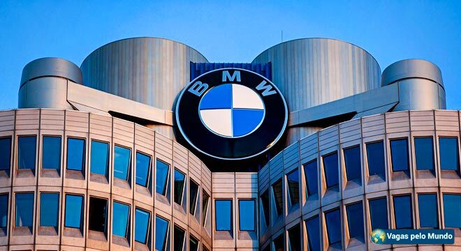

Apresento a você o BMW Group: a força bávara que há mais de um século transforma o "puro prazer de dirigir" em um ícone global de luxo, inovação e performance. Mais do que uma fabricante de automóveis, a BMW é o encontro entre a tradição da engenharia alemã e a visão audaciosa de um futuro movido pela tecnologia e sustentabilidade.

Aqui estão os pilares que sustentam este império automotivo:
-
Uma Herança de Altura: Nascida em 1916 como uma fábrica de motores de avião (Bayerische Motoren Werke), a marca carrega em seu DNA a obsessão pela precisão mecânica. Das hélices às pistas de corrida, cada curva do logotipo azul e branco — as cores da Baviera — é um tributo a uma história de superação e excelência técnica.
-
O Grupo de Elite: Sob o guarda-chuva do BMW Group, a empresa não apenas domina o segmento premium com a BMW, mas também define o luxo absoluto com a Rolls-Royce e a sofisticação urbana com a MINI. É um portfólio desenhado para quem exige o topo em cada categoria de mobilidade.
-
Vanguarda Tecnológica e Sustentável: Com a linha BMW i e a futura geração Neue Klasse, a empresa está liderando a transição para a mobilidade elétrica e a economia circular. No Brasil, essa inovação é tangível: com uma fábrica em Araquari (SC) e o novo centro tecnológico TechWorks em São Paulo, o grupo investe bilhões para criar o cérebro digital dos carros do futuro.